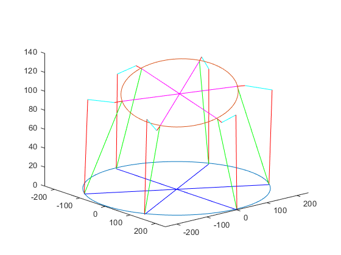

Contents
clc; clear all; close all;
Desired Pose (Given)
P = [0; 10; 100; deg2rad(5); deg2rad(5); deg2rad(0)];
Robot Parameters (Given)
Rf = 480/2;
Rm = 300/2;
alpha = pi/3;
beta = pi/3;
l1 = 20;
l2 = 70;
l3 = 100;
Calculating lower joint positions w.r.t. the lower coordinate frame
u1 = [-Rf*cos(alpha); Rf*sin(alpha); 0];
u2 = [Rf*cos(alpha); Rf*sin(alpha); 0];
u3 = [-Rf; 0; 0];
u4 = [Rf; 0; 0];
u5 = [-Rf*cos(alpha); -Rf*sin(alpha); 0];
u6 = [Rf*cos(alpha); -Rf*sin(alpha); 0];
u = [u1, u2 , u3 , u4 , u5 , u6];
Calculating upper joint positions w.r.t. the upper coordinate frame
s11 = [-Rm*cos(beta); Rm*sin(beta); 0];
s12 = [Rm*cos(beta); Rm*sin(beta); 0];
s13 = [-Rm; 0; 0];
s14 = [Rm; 0; 0];
s15 = [-Rm*cos(beta); -Rm*sin(beta); 0];
s16 = [Rm*cos(beta); -Rm*sin(beta); 0];
s1 = [s11 , s12 , s13 , s14 , s15 , s16];
Extracting Position and Euler Angle Information from the given desired pose
O = P(1:3,1);
a = P(4);
b = P(5);
c = P(6);
Calculating Rotation Matrix from Euler Angles
R1 = [1, 0, 0;
0, cos(a), -sin(a);
0, sin(a), cos(a)];
R2 = [cos(b), 0, sin(b);
0, 1, 0;
-sin(b), 0, cos(b)];
R3 = [cos(c), -sin(c), 0;
sin(c), cos(c), 0;
0, 0, 1];
R = R1*R2*R3;
IK of Radially Symmetric Hexapod Robot
L1 = zeros(3,6);
L1i = zeros(3,1);
s2 = zeros(3,6);
s2i = zeros(3,1);
L2i = zeros(3,1);
legLengths = zeros(6,1);
normL2i = 0;
q = zeros(3,6);
for i = 1:6
First and Second Loop Closure
L1i = O + R * s1(:, i) - u(:, i);
L1(:,i) = L1i;
q(1, i) = atan(L1i(2)/L1i(1));
s2i = [s1(1, i) + ((-1)^i)*l1*cos(q(1, i));
s1(2, i) + ((-1)^i)*l1*sin(q(1, i));
s1(3,i)];
s2(:,i) = s2i;
Third and Fourth Loop Closure
L2i = O + R * s2i - u(:, i);
normL2i = norm(L2i);
legLengths(i) = norm(L1i);
q(2, i) = acos(((l2^2) + (normL2i^2) - (l3^2)) / (2*l2*normL2i)) - (asin(L2i(3)/normL2i) + asin((L2i(3) - L1i(3))/l1));
q(3, i) = pi - acos(((l2^2) + (l3^2) - normL2i^2)/(2*l2*l3));
end
Visualizations
figure
hold on;
plotCircle(Rf, zeros(3,1), eye(3));
plotCircle(Rm, O, R);
sInGlobal = [O + R*s1(:,1), O + R*s1(:,2), O + R*s1(:,3), O + R*s1(:,4), O + R*s1(:,5), O + R*s1(:,6)];
line([O(1), sInGlobal(1,1)], [O(2), sInGlobal(2,1)], [O(3), sInGlobal(3,1)],'Color','magenta');
line([O(1), sInGlobal(1,2)], [O(2), sInGlobal(2,2)], [O(3), sInGlobal(3,2)],'Color','magenta');
line([O(1), sInGlobal(1,3)], [O(2), sInGlobal(2,3)], [O(3), sInGlobal(3,3)],'Color','magenta');
line([O(1), sInGlobal(1,4)], [O(2), sInGlobal(2,4)], [O(3), sInGlobal(3,4)],'Color','magenta');
line([O(1), sInGlobal(1,5)], [O(2), sInGlobal(2,5)], [O(3), sInGlobal(3,5)],'Color','magenta');
line([O(1), sInGlobal(1,6)], [O(2), sInGlobal(2,6)], [O(3), sInGlobal(3,6)],'Color','magenta');
line([0, u(1,1)], [0, u(2,1)], [0, u(3,1)],'Color','blue');
line([0, u(1,2)], [0, u(2,2)], [0, u(3,2)],'Color','blue');
line([0, u(1,3)], [0, u(2,3)], [0, u(3,3)],'Color','blue');
line([0, u(1,4)], [0, u(2,4)], [0, u(3,4)],'Color','blue');
line([0, u(1,5)], [0, u(2,5)], [0, u(3,5)],'Color','blue');
line([0, u(1,6)], [0, u(2,6)], [0, u(3,6)],'Color','blue');
line([u(1,1), L1(1,1)+u(1,1)], [u(2,1), L1(2,1)+u(2,1)], [u(3,1), L1(3,1)+u(3,1)],'Color','green');
line([u(1,2), L1(1,2)+u(1,2)], [u(2,2), L1(2,2)+u(2,2)], [u(3,2), L1(3,2)+u(3,2)],'Color','green');
line([u(1,3), L1(1,3)+u(1,3)], [u(2,3), L1(2,3)+u(2,3)], [u(3,3), L1(3,3)+u(3,3)],'Color','green');
line([u(1,4), L1(1,4)+u(1,4)], [u(2,4), L1(2,4)+u(2,4)], [u(3,4), L1(3,4)+u(3,4)],'Color','green');
line([u(1,5), L1(1,5)+u(1,5)], [u(2,5), L1(2,5)+u(2,5)], [u(3,5), L1(3,5)+u(3,5)],'Color','green');
line([u(1,6), L1(1,6)+u(1,6)], [u(2,6), L1(2,6)+u(2,6)], [u(3,6), L1(3,6)+u(3,6)],'Color','green');
s2InGlobal = [O + R*s2(:,1), O + R*s2(:,2), O + R*s2(:,3), O + R*s2(:,4), O + R*s2(:,5), O + R*s2(:,6)];
line([sInGlobal(1,1), s2InGlobal(1,1)], [sInGlobal(2,1), s2InGlobal(2,1)], [sInGlobal(3,1), s2InGlobal(3,1)],'Color','red');
line([sInGlobal(1,2), s2InGlobal(1,2)], [sInGlobal(2,2), s2InGlobal(2,2)], [sInGlobal(3,2), s2InGlobal(3,2)],'Color','red');
line([sInGlobal(1,3), s2InGlobal(1,3)], [sInGlobal(2,3), s2InGlobal(2,3)], [sInGlobal(3,3), s2InGlobal(3,3)],'Color','red');
line([sInGlobal(1,4), s2InGlobal(1,4)], [sInGlobal(2,4), s2InGlobal(2,4)], [sInGlobal(3,4), s2InGlobal(3,4)],'Color','red');
line([sInGlobal(1,5), s2InGlobal(1,5)], [sInGlobal(2,5), s2InGlobal(2,5)], [sInGlobal(3,5), s2InGlobal(3,5)],'Color','red');
line([sInGlobal(1,6), s2InGlobal(1,6)], [sInGlobal(2,6), s2InGlobal(2,6)], [sInGlobal(3,6), s2InGlobal(3,6)],'Color','red');
nL1InG = [(s2InGlobal(:,1)-sInGlobal(:,1))/norm(s2InGlobal(:,1)-sInGlobal(:,1)), (s2InGlobal(:,2)-sInGlobal(:,2))/norm(s2InGlobal(:,2)-sInGlobal(:,2)), ...
(s2InGlobal(:,3)-sInGlobal(:,3))/norm(s2InGlobal(:,3)-sInGlobal(:,3)), (s2InGlobal(:,4)-sInGlobal(:,4))/norm(s2InGlobal(:,4)-sInGlobal(:,4)), ...
(s2InGlobal(:,5)-sInGlobal(:,5))/norm(s2InGlobal(:,5)-sInGlobal(:,5)), (s2InGlobal(:,6)-sInGlobal(:,6))/norm(s2InGlobal(:,6)-sInGlobal(:,6))];
rots = [cross(nL1InG(:,1), R(1:3,3)), cross(nL1InG(:,2), R(1:3,3)), cross(nL1InG(:,3), R(1:3,3)), ...
cross(nL1InG(:,4), R(1:3,3)), cross(nL1InG(:,5), R(1:3,3)), cross(nL1InG(:,6), R(1:3,3))];
leg2 = [l2 .* rodrigues(nL1InG(:,1), rots(:,1), q(2, 1)), l2 .* rodrigues(nL1InG(:,2), rots(:,2), q(2, 2)), l2 .* rodrigues(nL1InG(:,3), rots(:,3), q(2, 3)), ...
l2 .* rodrigues(nL1InG(:,4), rots(:,4), q(2, 4)), l2 .* rodrigues(nL1InG(:,5), rots(:,5), q(2, 5)), l2 .* rodrigues(nL1InG(:,6), rots(:,6), q(2, 6))];
line([s2InGlobal(1,1), s2InGlobal(1,1) + leg2(1,1)], [s2InGlobal(2,1), s2InGlobal(2,1) + leg2(2,1)], [s2InGlobal(3,1), s2InGlobal(3,1) + leg2(3,1)],'Color','cyan');
line([s2InGlobal(1,2), s2InGlobal(1,2) + leg2(1,2)], [s2InGlobal(2,2), s2InGlobal(2,2) + leg2(2,2)], [s2InGlobal(3,2), s2InGlobal(3,2) + leg2(3,2)],'Color','cyan');
line([s2InGlobal(1,3), s2InGlobal(1,3) + leg2(1,3)], [s2InGlobal(2,3), s2InGlobal(2,3) + leg2(2,3)], [s2InGlobal(3,3), s2InGlobal(3,3) + leg2(3,3)],'Color','cyan');
line([s2InGlobal(1,4), s2InGlobal(1,4) + leg2(1,4)], [s2InGlobal(2,4), s2InGlobal(2,4) + leg2(2,4)], [s2InGlobal(3,4), s2InGlobal(3,4) + leg2(3,4)],'Color','cyan');
line([s2InGlobal(1,5), s2InGlobal(1,5) + leg2(1,5)], [s2InGlobal(2,5), s2InGlobal(2,5) + leg2(2,5)], [s2InGlobal(3,5), s2InGlobal(3,5) + leg2(3,5)],'Color','cyan');
line([s2InGlobal(1,6), s2InGlobal(1,6) + leg2(1,6)], [s2InGlobal(2,6), s2InGlobal(2,6) + leg2(2,6)], [s2InGlobal(3,6), s2InGlobal(3,6) + leg2(3,6)],'Color','cyan');
line([s2InGlobal(1,1) + leg2(1,1), u(1,1)], [s2InGlobal(2,1) + leg2(2,1), u(2,1)], [s2InGlobal(3,1) + leg2(3,1), u(3,1)],'Color','red');
line([s2InGlobal(1,2) + leg2(1,2), u(1,2)], [s2InGlobal(2,2) + leg2(2,2), u(2,2)], [s2InGlobal(3,2) + leg2(3,2), u(3,2)],'Color','red');
line([s2InGlobal(1,3) + leg2(1,3), u(1,3)], [s2InGlobal(2,3) + leg2(2,3), u(2,3)], [s2InGlobal(3,3) + leg2(3,3), u(3,3)],'Color','red');
line([s2InGlobal(1,4) + leg2(1,4), u(1,4)], [s2InGlobal(2,4) + leg2(2,4), u(2,4)], [s2InGlobal(3,4) + leg2(3,4), u(3,4)],'Color','red');
line([s2InGlobal(1,5) + leg2(1,5), u(1,5)], [s2InGlobal(2,5) + leg2(2,5), u(2,5)], [s2InGlobal(3,5) + leg2(3,5), u(3,5)],'Color','red');
line([s2InGlobal(1,6) + leg2(1,6), u(1,6)], [s2InGlobal(2,6) + leg2(2,6), u(2,6)], [s2InGlobal(3,6) + leg2(3,6), u(3,6)],'Color','red');
disp(norm(s2InGlobal(:,1)+leg2(:,1)-u(:,1)))
view([50, 22])

Validation: Compute FK
P0 = [0; 0; 100; 0; 0; 0];
dl = 1;
while dl > 0.001
aFK = P0(4);
bFK = P0(5);
cFK = P0(6);
B = [1, 0, sin(bFK);
0, cos(aFK), -sin(aFK)*cos(bFK);
0, sin(aFK), cos(aFK)*cos(bFK)];
T = [eye(3), zeros(3,3)
zeros(3,3), B];
R1FK = [1, 0, 0;
0, cos(aFK), -sin(aFK);
0, sin(aFK), cos(aFK)];
R2FK = [cos(bFK), 0, sin(bFK);
0, 1, 0;
-sin(bFK), 0, cos(bFK)];
R3FK = [cos(cFK), -sin(cFK), 0;
sin(cFK), cos(cFK), 0;
0, 0, 1];
RFK = R1FK * R2FK * R3FK;
LFK = zeros(3,6);
lFK = zeros(6,1);
nFK = zeros(3,6);
for leg = 1:6
LFK(:,leg) = P0(1:3,1) + (RFK * s1(:, leg)) - u(:, leg);
lFK(leg, 1) = norm(LFK(:,leg),2);
nFK(:,leg) = LFK (:, leg)/lFK(leg,1);
end
J = [nFK(:,1)' , cross(RFK * s1(:,1), nFK(:,1))';
nFK(:,2)' , cross(RFK * s1(:,2), nFK(:,2))';
nFK(:,3)' , cross(RFK * s1(:,3), nFK(:,3))';
nFK(:,4)' , cross(RFK * s1(:,4), nFK(:,4))';
nFK(:,5)' , cross(RFK * s1(:,5), nFK(:,5))';
nFK(:,6)' , cross(RFK * s1(:,6), nFK(:,6))'];
JRP = J * T;
Dl = legLengths - lFK;
P0 = P0 + pinv(JRP) * Dl;
dl = norm(Dl , 2);
end
disp(P);
disp(P0);
0
10.0000
100.0000
0.0873
0.0873
0
-1.8112
8.7914
98.6535
0.0912
0.0831
-0.0934
Auxillary Functions
function plotCircle(radius, offset, rotationMatrix)
t = linspace(0,2*pi);
x = (radius*cos(t));
y = (radius*sin(t));
z = ones(1,size(t,2));
pnts = rotationMatrix * [x;y;z] + offset;
plot3(pnts(1,:), pnts(2,:), pnts(3,:));
end
function vrot = rodrigues(v, k, theta)
vrot = v*cos(theta) + cross(k,v)*sin(theta) + k*(dot(k,v))*(1-cos(theta));
end
100.0127